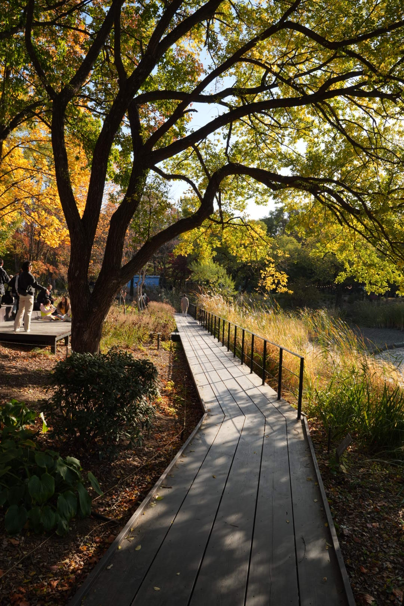

01
16mm, 풍경의 여백까지.
연못의 반영과 양옆의 갈대, 뒤편의 나무가 한 화면에 들어온다. 가까운 수면에서 먼 나무까지 시선이 이어지는 구성이다. 넓은 풍경을 담고 싶은 날의 출발점으로 볼 수 있다.
샘플은 F8 촬영. 축소 이미지의 인상과 별개로, 주변부 해상력은 원본 확대와 동일 조건 촬영으로 확인해야 한다.

풍경에서 디테일까지, 같은 산책 안에서.
카페의 작은 장식에서 연못 너머의 가을빛까지. 이번 사진 묶음에서 탐론 16–50mm F2.8의 매력은 화각을 바꾸며 서로 다른 장면을 이어 담는 데 있다.
16mm에서는 산책로와 나무, 하늘이 함께 들어온다. 50mm로 돌리면 건물의 선과 창문처럼 시선이 머무는 부분을 골라낼 수 있다. 멀리 있는 풍경을 기록하는 사진과, 그 안의 일부를 관찰하는 사진이 한 렌즈에서 이어진다.
이 글은 제공된 JPEG와 EXIF를 바탕으로 작성한 사진 리뷰다. 직접 사용하지 않은 AF 속도, 무게감, 조작감은 평가하지 않았다.
THE SETUP
소니 α6700에 탐론 16–50mm F2.8을 장착했다. 갤럭시 S25로 찍은 장비 사진에서는 바디와 렌즈의 비율, 줌 링의 초점거리 표시를 확인할 수 있다.
소니 샘플에는 16mm·22mm·50mm가 기록되어 있다. 실내의 F2.8부터 야외의 F8까지, 서로 다른 설정으로 담긴 사진을 따라가 본다.
장비 사진 촬영: Galaxy S2502 / IN THE FIELD
연못의 반영과 양옆의 갈대, 뒤편의 나무가 한 화면에 들어온다. 가까운 수면에서 먼 나무까지 시선이 이어지는 구성이다. 넓은 풍경을 담고 싶은 날의 출발점으로 볼 수 있다.
샘플은 F8 촬영. 축소 이미지의 인상과 별개로, 주변부 해상력은 원본 확대와 동일 조건 촬영으로 확인해야 한다.
같은 건물군을 담은 두 사진을 나란히 놓으면 화각 변화가 명확하다. 16mm에서는 나무와 공터가 장면을 만들고, 50mm에서는 건물과 외벽의 패턴이 주제가 된다.
촬영 위치와 프레이밍이 완전히 일치하는 측정용 비교는 아니다. 각 초점거리에서 구성할 수 있는 화면의 차이를 살펴보는 예시다.
나무 구조물과 벽 장식의 따뜻한 색이 이어지는 실내. 50mm F2.8 샘플에서는 간판을 좁게 담았고, 16mm F3.2 샘플에서는 계단과 주변 공간을 함께 담았다.
셔터 속도는 각각 1/25초와 1/40초. 밝은 조리개를 사용해도 셔터가 느려질 수 있다는 점을 보여준다. 움직이는 피사체를 찍을 때는 셔터 속도와 ISO를 함께 살펴야 한다.
03 / TWO CAMERAS, ONE WALK
비슷한 연못 풍경을 각기 다른 카메라로 담았다. 아래 사진은 원래 비율을 유지했다. 하늘과 나뭇잎, 그늘의 표현을 천천히 살펴보자.
두 파일의 색감과 밝기, 화면 구성 차이다. 촬영 시각·위치·화각·노출 및 카메라 내부 처리 조건이 일치하지 않으므로, 차이를 렌즈 성능이나 센서의 우열로 돌릴 수는 없다. 갤럭시의 초점거리는 EXIF의 실제 초점거리이며, 소니 수치와 직접 비교하지 않는다.
04 / PHOTO ARCHIVE
흐림이 뚜렷한 2장과 유사 구도의 9장을 제외해 30장을 선별했다. 화각·카메라 비교에 필요한 사진은 유지했다. 소니 사진은 웹용 축소본으로 표시하며, 갤럭시 사진은 원본 파일을 표시한다. 확대 화면에서 원본 파일을 열 수 있다. EXIF 수치는 읽기 쉽게 반올림했다.